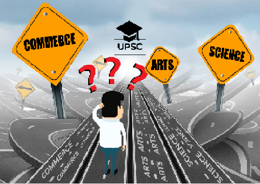
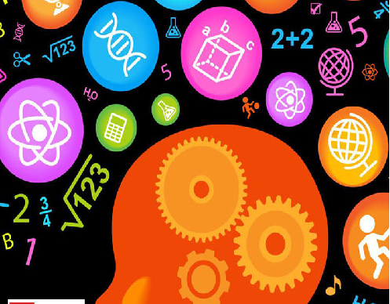
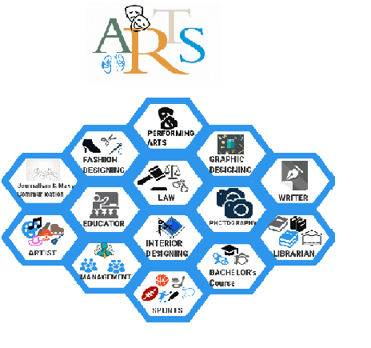

WHAT AFTER 10TH?
There are so many disciplines where you can go after the 10th Class like Engineering, Management, Design, Hotel Management and Tourism, Fashion Design, Medical Laboratory Sciences, Architecture. The most important factor to select the discipline is your interest.
SCIENCE
Science is the most popular and favourite career option for the majority of the parents and students. • Science stream offers many lucrative career options such as engineering, medical, IT and you can even opt for research roles. • The best advantage of taking science stream is, it keeps your options open. You might switch from science to commerce or science to arts. But it is not possible to do the other way around. •Taking science stream equips you with excellent problem-solving abilities. • Science and math offer a flexible foundation which enables students to accomplish highly respected and well-paid jobs. • Science is fun, amazing and fascinating. As Edward Teller rightly said “The science of today is the technology of tomorrow.”
ARTS
If you are a student who is creative and wants to dive deep into humanity, then arts is the stream for you. There are multiple options available for Arts stream after 10th class. If you have any confusion you can get your career counselling done. A career counsellor will provide you with proper career guidance and guide you in the right direction. These are the few good career options which you can choose after 10th class.
COMMERCE
If you have an affinity for numbers, business, economics then commerce is the stream for you. If you want to shape your career in economics and business world, then commerce is the right career for you. There are a number of options available for commerce stream after 10th class. If you have any doubts regarding whether to opt for commerce stream you can choose the smartest way by getting your career counselling done from an expert. Proper career guidance after 10th class is extremely necessary for a hassle-free career. Edumilestones career assessment is considered to be the best by the industry experts. Their career assessment is tested on statistical methodologies and provides accurate and reliable results.
SCIENCE
Science is a vast field and concerns almost everything that our eyes can see or cannot see. Everything in the universe can be studied under the field of science. Talking at a basic educational level, science can be divided into three broad subjects – Physics, Chemistry and Biology. In this stream, it is mandatory to study english,physics,chemistry. you are free to choose amongst biology, maths,computer science also depending on the board you opt for.
MATHEMATICS
Mathematics is a science of numbers and is often the most hated subject for students, and sometimes the most loved with use in money transactions and applications even in architecture, art, engineering, and sports. As a subject, Math focuses on the concepts of quantity, change, structure, and space. At a Class 11-12 level, you would learn about the principles of underlying processes and skills, identify the flow of reason while solving a problem or proving a result, and learn how to apply acquired skills to solve problems by more than one method. If you pursue the Medical (PCB) stream, you can also take on Mathematics as an optional subject.
BIOLOGY
The term ‘Biology’ is derived from the Greek language, with ‘bios’ meaning life and ‘logos’ meaning study, literally translating into the study of life forms. And that’s exactly what biology is. Biology studies living organisms – plants and animals – including facets such as their physical structures, physiological mechanisms, chemical processes, molecular interactions, and development and evolution. The subject of Biology at the Class 11-12 level focuses on providing a firm conceptual basis while also connecting the study of the subject with real-life technology, environment, agriculture, health, and industry.
OPTIONAL SUBJECTS
1)COMPUTER SCIENCE 2)INFORMATION PRACTICES 3)PHYSICAL EDUCATION 4)ECONOMICS 5)LANGUAGES(SANSKRIT/HINDI/FRENCH/LOCAL DIALECT) 6)BIO TECHNOLOGY
COMMERCE
Commerce is a popular choice among students after passing 10th standard. ... If you are good with numbers, good at analyzing and dealing with large chunks of data, have a taste in finance and economics, commerce stream will suit you. Students studying under Commerce stream have a thoughtful outlook on the outside world. The commerce stream after class 10 is quite a popular choice in India, as most students feel that the stream offer them a wide arena carrier options to pursue after class 12, that would bring them both success as well as financial security easily.
ECONOMICS
Mathematics is a science of numbers and is often the most hated subject for students, and sometimes the most loved with use in money transactions and applications even in COMMERCE. As a subject, Math focuses on the concepts of quantity, change, structure, and space. At a Class 11-12 level, you would learn about the principles of underlying processes and skills, identify the flow of reason while solving a problem or proving a result, and learn how to apply acquired skills to solve problems by more than one method. If you pursue the Medical (PCB) stream, you can also take on Mathematics as an optional subject.
ACCOUNTANCY
In any business or corporation, it’s important to analyze the economic success of the endeavour. The field of Accountancy or Accounting involves the measurement, processing and communication of the financial data of a particular business, corporation or other economic entity. Accountancy measures the results of the economic activities of an organization, communicating it to users such as investors, creditors, regulators and management. The study of Accountancy in Class 11-12 will provide you with a comprehensive understanding of accounting and basic accounting concepts. You will learn about emerging areas in the preparation of financial statements, expenditure, how to design an accounting database and how to record business transactions.
BUSINESS STUDIES
The subject of Business Studies focuses on analyzing, evaluating and responding to the changes that affect businesses and the business environment, including social, political, economic and legal influences. At a Class 11-12 level, Business Studies will provide you with a basic knowledge of the business world, helping you understand the framework in which a business operates and the business processes involved. You will also learn about the interdependent nature of businesses and the theoretical foundation of managing operations of a business firm.
ARTS
Defining humanities is a difficult task. However, it can be said in a few words that it is an academic discipline which deals with the study of the ‘Human Condition’, utilizing methodologies that are usually analytical, critical or speculative. The wide range of subjects that come under the umbrella term of Humanities range from history, languages, literature, law, philosophy, religion, performing arts, anthropology, communication, sociology, psychology and many more.
PSYCHOLOGY
Humanities as a whole are all about the functioning of human society, systems and social relationships. Psychology, very much a social science, involves understanding how and why people behave in groups and social settings. Therefore, the understanding of Psychology, when combined with other humanities subjects, like History, Political Science, Sociology, etc. can give you a broader perspective about society and its functioning. This understanding can be applied even when you build a career in the field, with various sub-fields to choose from, Social Psychology, Counselling Psychology, Organizational Psychology, and so on.
HOME SCIENCE
Home Science is a viable option for study for humanities students too. While as a humanities student you will not be eligible for a B.Sc (Hons.) course in Home Science, you can still get into a regular program such as a B.Sc or B.A in Home Science. As a part of this course, you’ll study a variety of areas and disciplines like sociology, economics, resource management, design, community living, hygiene, food, nutrition, etc. With a degree in this field, you can work in sectors such as family and child welfare organizations, schools, hospitality, fashion journalism, retail, etc. in various roles.
COMPUTERS WITH HUMANITIES
Commerce or Humanities students interested in computers and increasing their knowledge of programming can opt for Informatics Practices as their 5th subject. You can build a career in this field with a Bachelor’s degree in Computer Applications (BCA), followed by a Master’s degree in Computer Applications (MCA). Topics covered under informatics practices course includes understanding the basic of computers and its application, database management system, programming languages such as SQL, Oracle, JAVA for problem-solving, e-learning, etc.
BE RIGHTFUL IN CHOOSING YOUR STREAM(DONT BE IN HASTE, CHOOSE WISELY!!)
Normally, students are unaware of the fact that 10th is the initial and crucial stage of building a career. They take the decision with puzzled and ambiguous mind and end up selecting a wrong stream thereby opening the door to worst consequences in the long-term career prospects. Choosing the right stream has a long lasting impact on a student’s future. It has been often noticed student start hating their subject after some time or quit their subject midway or start feeling frustrated about the wrong move or decision.
-
-

-

-

-
-
Contact us
In case you are confused as to what is the right subjects you wish to choose, please feel free to contact us and we are looking forward to helping you !!